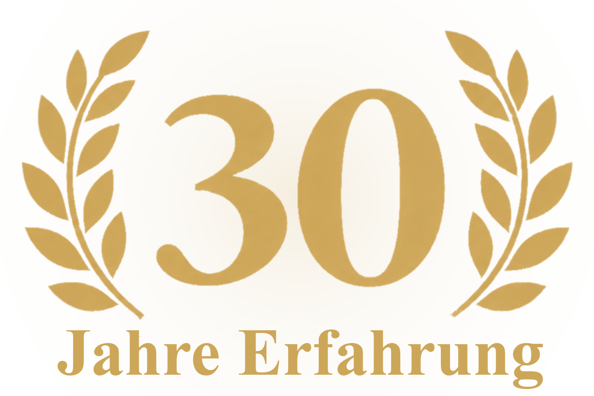

SEITE / 01
Paul Jes
Was soll hier stehen?
PAUL JES - MUSIKUNTRRICHT

In München-Daglfing
Klassische Gitarre - Klavier - Bass - E-Gitarre
Für Anfänger, Fortgeschrittene & Profis
SEITE / 01
Was soll hier stehen?
SEITE / 02
Hier steht was
SEITE / 03
Text von hier kann auch was stehen
SEITE / 04
Frameparagraph ?
PAUL JES - MUSIKUNTRRICHT
Hier könnte Ihre Werbung stehen
Mehr Text